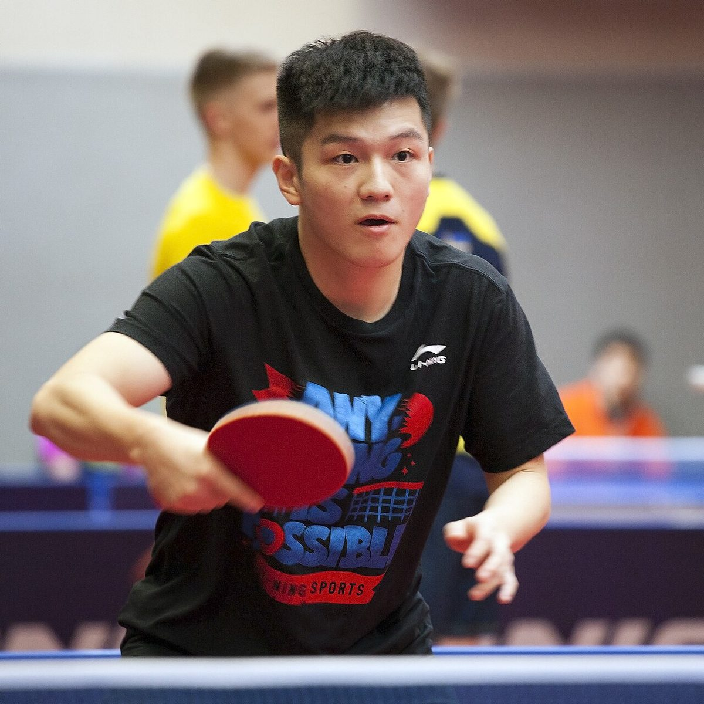

马龙：从鞍山少年到六枚奥运金牌
他曾无缘2012年伦敦奥运会男单阵容，此后蝉联奥运男单冠军，并实现世乒赛男单三连冠。

少年成名
马龙1988年10月20日出生于辽宁省鞍山市。他先后夺得亚洲青年锦标赛和世界青年锦标赛冠军，17岁时随中国队出战2006年不来梅世乒赛团体赛，成为世界冠军。他早期的教练包括前国家队教练马凯旋，之后师从秦志戬。
22岁之前，马龙已在国际乒联巡回赛中11次打进决赛，8次夺冠，还拿到两个亚洲杯冠军和两个巡回赛总决赛冠军。

挫折
2010年至2014年间，马龙长期排名世界第一，但最重要的单打冠军一直与他无缘。2009年、2011年和2013年世乒赛，他三次止步男单半决赛，每次都输给队友王皓。国家队主教练刘国梁曾公开表示，马龙具备所有条件，但在大赛中有时缺乏足够的心理韧性。
2012年，在560天不败之后，他的状态出现下滑：在亚洲区奥运预选赛上输给日本选手丹羽孝希，又在韩国公开赛上不敌李尚洙。中国队没有让他参加伦敦奥运会男单比赛，他在那届奥运会上拿到了男团金牌。与此同时，他的对手张继科完成了大满贯。
突破

2013年第三次输给王皓后，马龙赢得中国公开赛冠军、第三个亚锦赛冠军，并在全运会决赛中击败樊振东夺冠。2014年东京世乒赛团体赛，他一局未失，获得授予赛事最佳球员的维克多·巴纳奖。
2015年苏州世乒赛，他六局击败方博，首次夺得世乒赛男单冠军。2017年在杜塞尔多夫，他与樊振东战至决胜局后卫冕；2019年在布达佩斯，他4比1击败瑞典选手马蒂亚斯·法尔克，实现三连冠。
两届奥运男单冠军
2016年里约奥运会男单决赛，马龙4比0（14比12、11比5、11比4、11比4）击败卫冕冠军张继科。这枚金牌让他成为第五位完成大满贯（奥运会、世乒赛、世界杯男单冠军）的男子选手。他在里约还拿到了男团金牌。
五年后的东京奥运会，他在决赛中4比2击败樊振东，第二次夺得奥运男单金牌，并再添一枚男团金牌。他是唯一一位完成“双圈大满贯”的男子选手。
六枚金牌与新角色
2024年巴黎奥运会，马龙担任中国代表团开幕式旗手之一，并拿到个人第四枚男团金牌。他共获得六枚奥运金牌（两枚单打、四枚团体），是乒乓球历史上奥运金牌最多的运动员，也是获得奥运金牌最多的中国运动员。
他累计排名世界第一64个月，其中从2015年3月起连续34个月位居榜首。他还三次夺得世界杯男单冠军（2012年、2015年和2024年）。
2024年12月31日，马龙退出国际乒联世界排名。2025年4月，他出任中国乒乓球协会副主席。